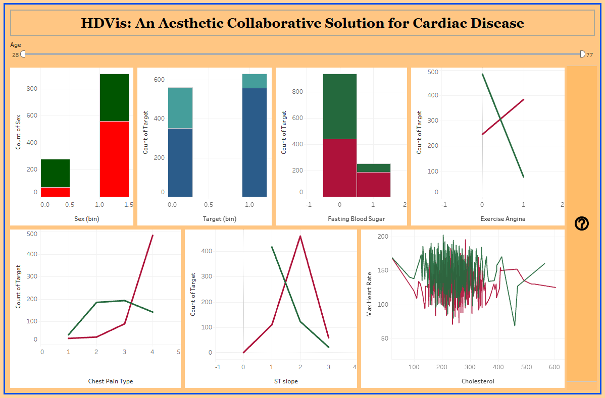

HDVis: An Aesthetic Collaborative Solution for Cardiac Disease
An interactive visualization system for heart disease analysis, published in IEEE. This dashboard simplifies complex medical datasets into dynamic visual insights, enabling data-driven healthcare decisions.
Interactive Tableau Dashboard
Dashboard is fully interactive. Use the Age slider at the top and hover over charts for detailed clinical insights.
Research Publication
This project is part of my published research paper in IEEE (2022), demonstrating the application of data visualization in healthcare analytics.
Publication Details:
- • Conference: IEEE ICDSIS 2022
- • DOI: 10.1109/ICDSIS55133.2022.9915972
- • Focus: Heart Disease Prediction & Visualization
Tools & Technologies
- Tableau: Advanced interactive visualizations with dynamic filtering
- Medical Data Analysis: Clinical risk factor identification
- User-Centric Design: Healthcare professional-friendly interface
- Research Methodology: Data-driven decision support system
Key Features & Insights
Demographic Analysis
Age-based filtering (28-77 years) and sex distribution analysis revealing distinct risk patterns across demographics.
Clinical Indicators
Fasting blood sugar, exercise-induced angina, and chest pain type visualizations for early risk detection.
ST Slope Analysis
Electrocardiogram (ECG) ST slope patterns correlated with heart disease target classification.
Cholesterol & Heart Rate
Maximum heart rate and cholesterol level distributions showing clear separation between healthy and at-risk patients.
Target Prediction
Binary classification visualization (Target bin) showing disease presence/absence patterns across multiple factors.
Research Impact
Simplified multidimensional medical datasets into dynamic dashboards, enhancing data-driven clinical decisions.
Dashboard Overview

Complete Interactive Dashboard
HDVis features multiple coordinated visualizations including age slider (28-77), sex distribution bars, target classification, fasting blood sugar analysis, exercise angina patterns, chest pain types, ST slope correlations, and cholesterol vs. max heart rate scatter plots.